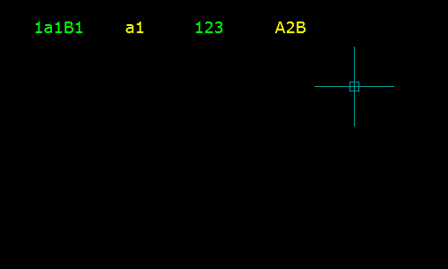
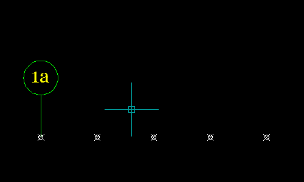
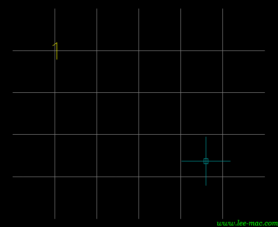

Incremental Array
This page is delivered for consistency purposes only, as part of the LeeMac sample module of DynALisp, which shows how DynALisp turns existing AutoLISP programs into a module. The program and its description are the work of Lee Mac, who keeps all the credit for them. The original page, with the latest version, is on Lee Mac's website: https://lee-mac.com/incrementalarray.html
| Function Syntax | LM-IncrementalArray – original syntax: incarray / incarrayd (dynamic) (see aliases) |
| Current Version | 1.9 |
| Compatible with AutoCAD for Mac? | No |
| Compatible with AutoCAD LT? | Yes |
| Original Page | lee-mac.com/incrementalarray.html |
Program Description
This program will array a selection of objects, whilst automatically incrementing any numerical content found in annotation objects within the selection by a given increment value.
The program has two modes of operation: standard & dynamic. The standard command: incarray will not display the dynamic preview, but in turn will run faster and smoother than the dynamic version - this difference is especially significant when attempting to array a large number of objects.
The dynamic mode: incarrayd will display a preview of the arrayed objects as the mouse is dragged across the screen. However, due to the method used to generate this preview, this mode is only suitable when using the program to array a small number of objects.
Upon starting the program, the user is first prompted to specify an increment value; this increment value is remembered by the program and is available as a default option for the next use of the program.
The user is then prompted to make a selection of objects to array; this selection may include any drawing object with the exception of viewports - if the selection does not include any annotation objects, the program may be used as an alternative to create a standard array.
Following a valid selection, the user should specify a base point and an array vector relative to the base point. The angle and length of this vector will determine the direction and density of the array respectively; a shorter vector will result in a denser array, as demonstrated by the animations below.
After these prompts, the array may be generated by moving the mouse across the screen until the array reaches a desired size. If the object selection includes Text, MText, Attribute Definitions, Dimensions, or Multileader objects, any numerical data found in the text content of these objects will be automatically incremented by the given increment value as the object is arrayed.
Examples of Usage



Bundled program notes
;;-----------------------=={ Incremental Array }==----------------------;;
;; ;;
;; This program will array a selection of objects, whilst incrementing ;;
;; any numerical content found in annotation objects within the ;;
;; selection. ;;
;; ;;
;; The program has two modes of operation: standard & dynamic. The ;;
;; standard command: 'incarray' will not display the dynamic preview, ;;
;; but in turn will run faster and smoother than the dynamic version ;;
;; - this difference is especially significant when attempting to ;;
;; array a large number of objects. ;;
;; ;;
;; The dynamic mode: 'incarrayd' will display a preview of the ;;
;; arrayed objects as the mouse is dragged across the screen. However, ;;
;; due to the method used to generate this preview, this mode is only ;;
;; suitable when using the program to array a small number of objects. ;;
;; ;;
;; Upon starting the program, the user is prompted to specify an ;;
;; increment value and then prompted to make a selection of objects ;;
;; to array. This selection may include any drawing object with the ;;
;; exception of viewports. ;;
;; ;;
;; Following a valid selection, the user should specify a base point ;;
;; and array vector relative to the base point. The angle and length ;;
;; of this vector will determine the direction and density of the ;;
;; array respectively; a shorter vector will result in a denser array. ;;
;; ;;
;; The array may now be generated by dragging the mouse across the ;;
;; screen until the array reaches a desired size. If the object ;;
;; selection includes Text, MText, Attribute Definitions, Dimensions, ;;
;; or Multileader objects, any numerical data found in the text ;;
;; content of these objects will be automatically incremented by the ;;
;; given increment value as the object is arrayed. ;;
;;----------------------------------------------------------------------;;
;; Author: Lee Mac, Copyright © 2014 - www.lee-mac.com ;;
;;----------------------------------------------------------------------;;
;; Version 1.0 - 2011-07-27 ;;
;; ;;
;; - First Release. ;;
;;----------------------------------------------------------------------;;
;; Version 1.1 - 2011-07-29 ;;
;; ;;
;; - Fixed UCS bug by adding displacement flag to trans expressions. ;;
;; With thanks to Swamp user HighflyingBird for finding this. ;;
;;----------------------------------------------------------------------;;
;; Version 1.2 - 2011-07-29 ;;
;; ;;
;; - Added non-dynamic version of the program. ;;
;; - Added ability to increment Attribute Def Tags, Prompts & Text. ;;
;; - Improved increment functionality to retain all leading and ;;
;; trailing zeros. ;;
;;----------------------------------------------------------------------;;
;; Version 1.3 - 2011-08-05 ;;
;; ;;
;; - Added ability to array all objects, not just annotation objects. ;;
;; Any annotation objects in the selection which contain numerical ;;
;; data will still be incremented. ;;
;; - Attributes within arrayed attributed blocks are now incremented. ;;
;; - MLeader Text & Dimension Override Text are incremented. ;;
;;----------------------------------------------------------------------;;
;; Version 1.4 - 2011-09-30 ;;
;; ;;
;; - Fixed bug when arraying attributes on locked layers. ;;
;;----------------------------------------------------------------------;;
;; Version 1.5 - 2014-04-13 ;;
;; ;;
;; - Program completely rewritten. ;;
;; - Added prompt for increment value. ;;
;;----------------------------------------------------------------------;;
;; Version 1.6 - 2014-04-13 ;;
;; ;;
;; - Fixed variable name clash and grvecs bug present in AutoCAD 2006 ;;
;; as reported by Swamp user CAB - many thanks. ;;
;;----------------------------------------------------------------------;;
;; Version 1.7 - 2014-06-07 ;;
;; ;;
;; - Fixed accumulated rounding errors appearing at 44 onwards when ;;
;; incrementing a value of 1 by an increment of 1. ;;
;;----------------------------------------------------------------------;;
;; Version 1.8 - 2016-10-26 ;;
;; ;;
;; - Fixed a bug causing the program to crash if parentheses or double ;;
;; quotes are present in the text content. ;;
;;----------------------------------------------------------------------;;
Command Names And Aliases
As in every DynALisp module, each program of this sample module has one main command, named LM-*, and the original command names of Lee Mac's page are kept as its aliases: they run the same command, and can be added, renamed or removed in Dyl-Suite (saved in Resources\Aliases.csv). The rows marked ↳ are child commands of LM-IncrementalArray: they are run by their alias, or picked from LM-IncrementalArray when it lists them (their command is named Pst-*).
| Command | Aliases | Name |
|---|---|---|
| LM-IncrementalArray | INCARRAY | Incremental Array |
| ↳ INCARRAYD | – | Incremental Array Dynamic |